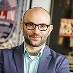

About Method M Films

Method M Films is powered by up and coming filmmakers from the University of Missouri- Columbia. Our filmmakers are part of the Johnathan B. Murry Center for Documentary Journalism site. They have taken part in the Missouri Method which is both how Method M got its name and how the Journalism school teaches its students. The Missouri Method is a style of learning though real-life journalism exposure. This is where the seniors of the Murry Center showcase their work.
Faculty
Stacey Woelfel
Director of the Jonathan B. Murray Center for Documentary Journalism at the school. He serves on the screening committee of the True/False Film Fest, is a jury member for the St. Louis International Film Festival and serves as a jury member and a member of the board of the Kansas City Film Festival.

Robert Greene
Filmmaker-in-chief for the Jonathan B. Murray Center for Documentary Journalism. He was named one of the 10 Filmmakers to Watch in 2014 by The Independent. Robert’s most recent film is the critically-acclaimed Kate plays Christine.